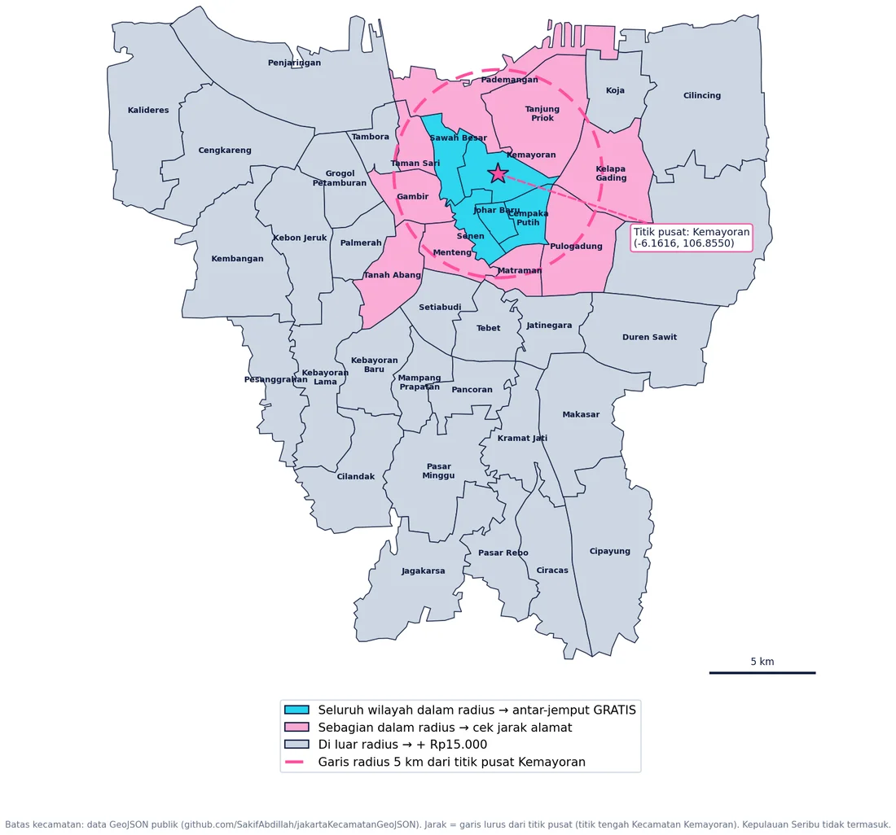

01
Basic Cleaning
Membersihkan debu & kotoran harian di upper, sol, dan tali.
Sepatu kucel? Santai, biar kami yang urus. Tinggal chat, kami jemput, balik lagi udah kinclong.
Chat WhatsApp, kirim alamat dan sharelock. Kurir SoleVibe menjemput sepatumu, gratis dalam radius 5 km dari Kemayoran.
Setiap pasang difoto dari 6 sudut dan dicek bahannya. Kalau ada kerusakan, kami kabari dulu sebelum dicuci.
Debu harian disikat, lalu noda berat dibersihkan dengan metode yang sesuai bahan sepatumu.
Bahan sensitif dirawat khusus. Bagian putih yang kusam dan sol yang menguning dicerahkan kembali.
Diberi conditioner dan deodorizer, bentuknya dirapikan, lalu dicek satu per satu sebelum dikemas.
Selesai 2 hari. Sepatu diantar ke rumahmu, bayar tunai atau transfer saat sampai.
Setiap pasang otomatis dapat kelima perawatan ini, tanpa biaya tambahan per layanan.
Membersihkan debu & kotoran harian di upper, sol, dan tali.
Pembersihan menyeluruh untuk noda dan kotoran berat.
Conditioner, deodorizer di bagian dalam, dan merapikan bentuk sepatu.
Penanganan khusus sesuai bahan, seperti suede, nubuck, dan mesh.
Mencerahkan bagian putih yang kusam: upper, midsole, dan tali.
Beda bahan, beda perlakuan. Ini panduan singkat yang juga kami pakai di workshop.
Tiap kelipatan Rp10.000 dari biaya cuci yang dibayar. Ongkir tidak dihitung.
Potongan untuk order berikutnya, boleh dipakai sampai menutup seluruh tagihan.
Poin berlaku sampai 31 Desember. Contoh: 2 pasang Rp100.000 = 10 poin.
Kirim nama, nomor telepon, email (opsional), jumlah pasang, hari jemput, alamat lengkap + patokan, dan sharelock.
Admin mengonfirmasi jadwal. Gak di rumah? Titip di teras, pos satpam, atau resepsionis kos.
Diperiksa, difoto, lalu dicuci dengan metode yang pas untuk bahannya.
Sepatu diantar balik dalam keadaan kinclong. Bayar COD saat sampai.
Di luar jam itu chat tetap masuk dan kami balas begitu jam aktif dimulai.
Order hanya lewat WhatsApp. Tidak ada toko offline.
Jarak dihitung garis lurus dari titik pusat Kemayoran. Yang menentukan tetap alamatmu, jadi kirim sharelock dan admin akan cek.

| Kota | Gratis penuh | Sebagian (cek alamat) |
|---|---|---|
| Jakarta Pusat | Sawah Besar, Kemayoran, Senen, Cempaka Putih, Johar Baru | Menteng, Gambir, Tanah Abang |
| Jakarta Utara | — | Tanjung Priok, Pademangan, Kelapa Gading |
| Jakarta Barat | — | Taman Sari |
| Jakarta Timur | — | Matraman, Pulogadung |
| Cara kirim | Biaya |
|---|---|
| Kurir SoleVibe, ≤ 5 km | Gratis jemput & antar |
| Kurir SoleVibe, > 5 km | +Rp15.000 per order (jemput + antar) |
| Ojol (GoSend/GrabExpress) | Sesuai tarif aplikasi, pergi & pulang, ditanggung customer |
| Ekspedisi (JNE, J&T, dll.) | Sesuai tarif ekspedisi, pergi & pulang, ditanggung customer |
Ringkasan aturan dari SOP operasional SoleVibe yang berlaku untuk setiap order.
2 hari sejak sepatu diterima, sudah termasuk diantar balik.
Kirim foto sepatunya (depan, samping, sol) lewat WhatsApp. Kami layani kanvas, suede, nubuck, mesh/rajut, karet, denim, dan kulit sintetis. Lihat juga bagian Kenali Bahan Sepatumu.
Titip saja di tempat yang gampang dijangkau kurir, misalnya teras, pos satpam, atau resepsionis kos. Sebelum jemput, admin pasti konfirmasi dulu.
Bisa. Cukup tambah Rp15.000 per order untuk jemput dan antar balik, atau kirim sendiri lewat ojol/ekspedisi.
Saat sepatu diantar kembali (COD): tunai, transfer, atau QRIS.
Kabari kami lewat WhatsApp dengan foto bagian yang dikeluhkan. Kalau memang kurang bersih, kami cuci ulang gratis dan jemput-antarnya ditanggung SoleVibe.
Promo hanya berlaku sekali per customer, tapi tidak ada batas waktu. Setelah itu kamu tetap kumpulkan Poin SoleVibe di setiap order.